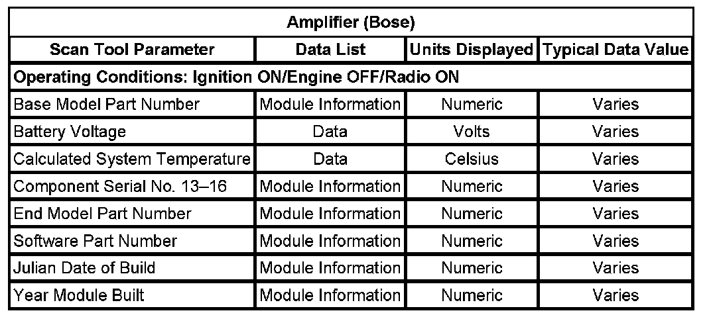
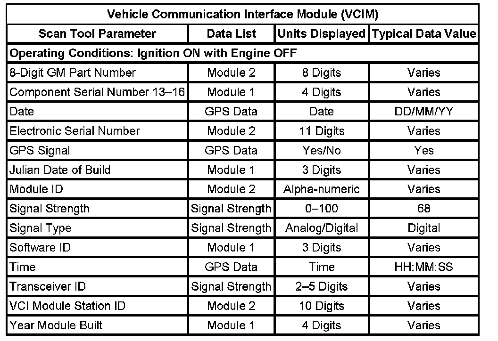
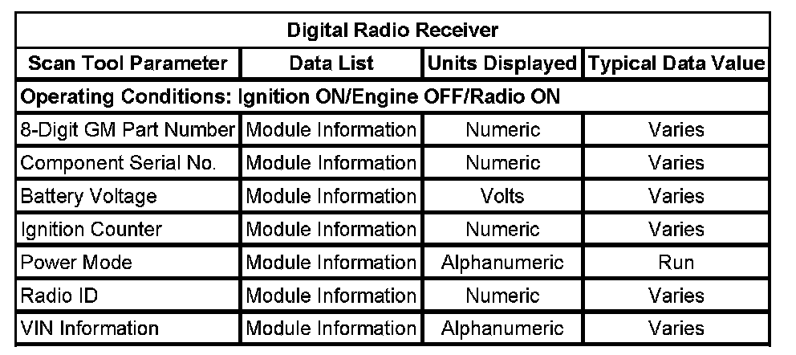
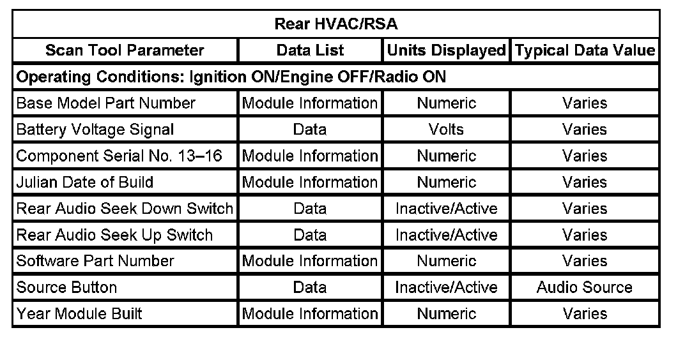

Operation CHARM
: Car repair manuals for everyone.
Home
>>
Cadillac
>>
2007
>>
Escalade ESV AWD V8-6.2L
>>
Repair and Diagnosis
>>
Accessories and Optional Equipment
>>
Testing and Inspection
>>
Scan Tool Testing and Procedures
>>
Scan Tool Testing - Cellular, Entertainment, and Navigation
>>
Scan Tool Data List
Scan Tool Data List
Amplifier (Bose):

Vehicle Communication Interface Module (VCIM):

Digital Radio Receiver:

Rear HVAC/RSA:

Radio: